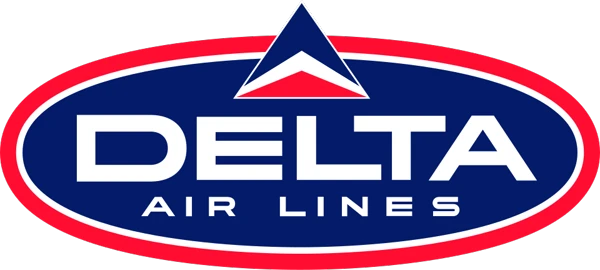
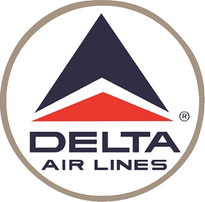
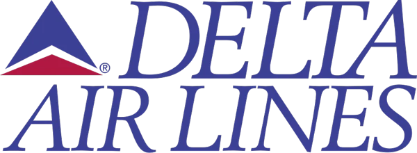

델타 항공 Delta Air Lines
델타 항공(Delta Air Lines)은 미국 국적의 항공사이다. 이 항공사는 대한항공, 에어 프랑스, 아에로멕시코와 함께 스카이팀의 원년 가맹사 중 하나이다.
최종 업데이트

델타 항공은 어떤 브랜드인가
델타 항공은 총 여객 운송수, 보유 항공기수, 연간 매출액을 기준으로 세계 최대의 항공사로 꼽힌다. 아메리칸 항공, 유나이티드 항공과 함께 미국의 3대 메이저 항공사 중 하나이다.
남극 대륙을 제외한 세계 모든 대륙 88개국 247개 도시에 항공편을 운영한다. 하츠필드 잭슨 애틀랜타 국제공항을 메인 허브공항으로 두며, 디트로이트와 미니애폴리스를 허브 공항으로 추가했다.
2018년 10월 현재 델타 항공과 항공 동맹 파트너들은 매일 약 15,000 회의 운항을 수행한다.
델타 항공은 어떻게 시작되고 성장했나
델타 항공은 1924년 농약 살포 전문 항공사로 설립되어 1929년에 여객 수송을 시작했다. 1930년 델타 에어라는 법인으로 재설립되어 애틀랜타에 취항하고 노선을 확장했다.
1941년에 본사를 애틀랜타로 이전했고 1945년 현재의 명칭으로 변경했다. 1953년 시카고 앤드 서던 항공, 1972년 노스이스트 항공 등 다수의 항공사와 합병하며 성장했다.
1987년에는 웨스턴 항공과 합병하고 최초로 태평양 횡단 노선을 신설해 일본 도쿄에 취항했다.
델타 항공의 브랜드 아이덴티티는 무엇인가
델타 항공은 세계 모든 대륙에 광범위한 노선을 운영하는 글로벌 항공사이다. 스카이팀의 원년 가맹사이자 미국 3대 메이저 항공사 중 하나로 위상을 가진다.
델타 항공의 대표 제품과 서비스는 무엇인가
델타 항공은 남극 대륙을 제외한 88개국 247개 도시에 항공편을 운항한다. 애틀랜타에서 요하네스버그간 노선과 같은 장거리 직항편을 운영한다.
1981년 상용 고객 우대 프로그램 스카이마일스를 시작했으며, 1984년 지역 항공사 브랜드 델타 커넥션을 설립했다. 2000년에는 스카이팀을 창립하여 항공 동맹을 이끌었고, 2017년 대한항공과 조인트 벤처 협정에 조인했다.
자회사 델타 프레벳 제트를 통해 제트 항공기 및 헬리콥터 전세 서비스도 제공한다.
델타 항공은 지금 어떤 상태인가
델타 항공 로고는 어떻게 변해왔나

1962–1963
1963–1965- 1965–1965
- 1965–1985
- 1985–1985
- 1985–1987
- 1987–1993

1993–1995- 1995–2000
- 2000–2004
- 2000–현재
시기는 위키데이터 로고 기간 또는 위키미디어 커먼즈 파일 정보 기준입니다. 이미지를 누르면 원본 파일과 라이선스를 볼 수 있습니다.
자주 묻는 질문
델타 항공는 어느 나라 브랜드인가요?
델타 항공는 미국의 모빌리티 브랜드입니다.
델타 항공는 언제 설립되었나요?
델타 항공는 1925년 설립되었습니다.
델타 항공의 브랜드 아이덴티티는 무엇인가요?
델타 항공은 세계 모든 대륙에 광범위한 노선을 운영하는 글로벌 항공사이다.
델타 항공의 대표 제품은 무엇인가요?
델타 항공은 남극 대륙을 제외한 88개국 247개 도시에 항공편을 운항한다.
델타 항공는 현재 어떤 상태인가요?
델타 항공은 노스웨스트 항공 합병 이후 세계 최대 글로벌 항공사 중 하나이자 미국 3대 메이저 항공사로 자리매김했다.
델타 항공의 본사는 어디에 있나요?
델타 항공의 본사는 애틀랜타에 있습니다(위키데이터 기준).
델타 항공의 공식 웹사이트는 어디인가요?
델타 항공의 공식 웹사이트는 https://www.delta.com/ 입니다.
출처와 검증
델타 항공 관련 참고: 공식 웹사이트 · 위키데이터 Q188920 · 한국어 위키백과 · 영어 위키백과. 브랜드명은 한글과 원어를 함께 표기하되 데이터에 없는 표기는 만들지 않습니다. 기원 국가·설립연도는 검수된 정의문에서 확인된 값을 우선하고, 없을 때만 공식 웹사이트 URL이 일치하는 위키데이터 개체의 값을 씁니다. 탄생일의 월·일은 위키데이터, 위키백과 정보상자, 본문 가운데 같은 연월로 확인되는 값만 싣고, 출처끼리 다르면 싣지 않습니다. 웹 첫 보관은 인터넷 아카이브가 공식 사이트 첫 화면을 처음 보관한 날로, 사이트 개설일과 다를 수 있습니다. 연 매출은 미국 증권거래위원회(SEC)에 제출된 연차 보고서(10-K)의 XBRL 값이며 달러 금액을 반올림했습니다. 위키데이터 값은 2026-09-07 기준입니다.